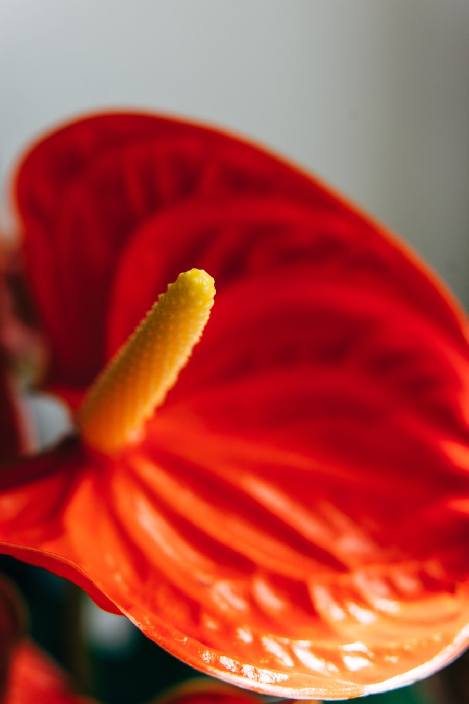

About Beautiful Flowers
I also enjoy the tropical plants like the ones we see in Hawaii. These plays require alot of water so they are mostly found in those areas were it rains heavily. They are beautiful to grow and keep in home gardens though too not just when you go see them like on vacation.They look more spikey and truly different from the normal petals we see on blooms. Their is also a rich color to them that is so bright. The diffuculty comes when it is time to identify them. But some tips to are to look at their leaf size, fregrance, and color. .
I am more fascinated with the color and how we see them. That color has to do with pigments. The fewer the pigments the lighter the color and vice versa. The most common of pigments come in a form of anthocyanins. These range in color from white to red, to blue to yellow, to purple and even black and brown. Carotenoids are responsible for some yellows, oranges and reds. While many flowers get their colors from either anthocyanins or carotenoids, there are some that can get their colors from both! But either way no matter what shape, form and colors they all have unique pigment that makes them the flowers we know today.
Types of Tropical flowers
- Alpinia purpurata
- Alpinia zerumbet
- Anthurium